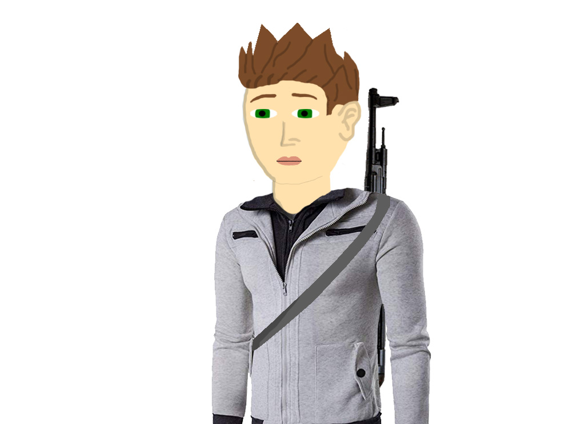
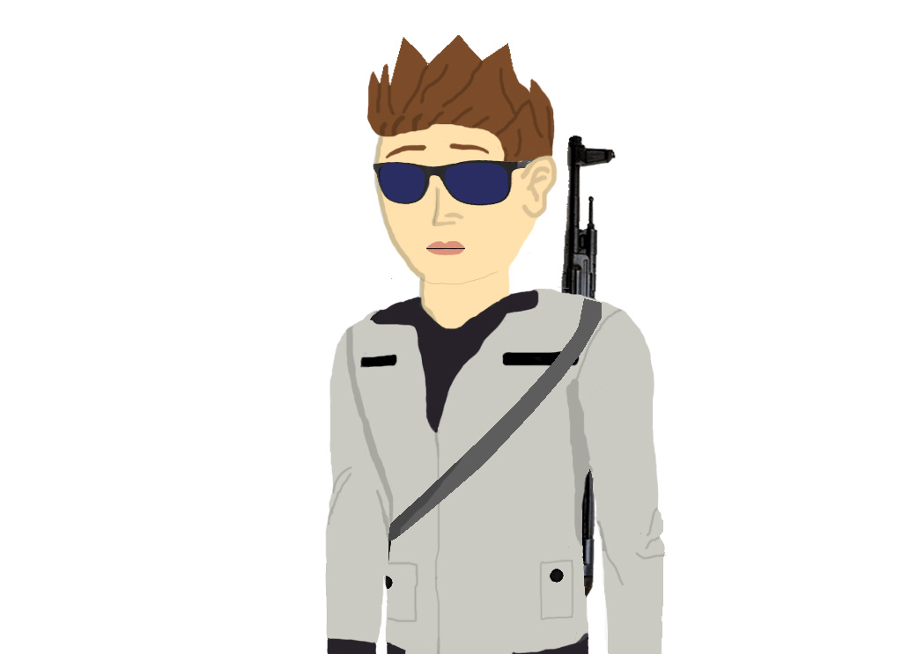
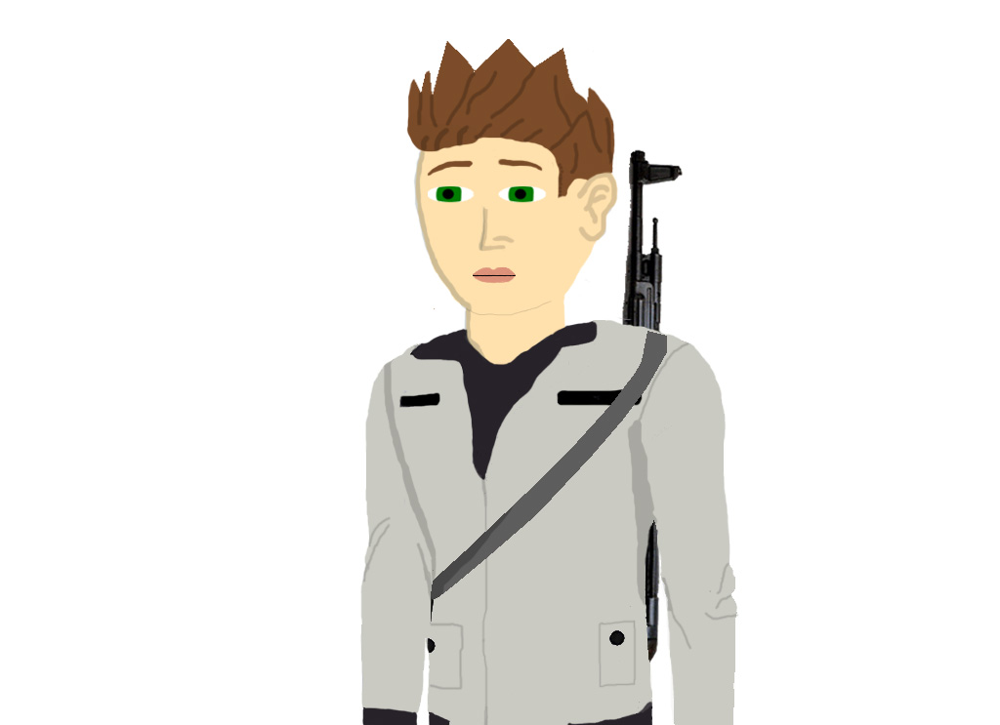

Proyecto: Mi autorretrato
Para este proyecto tuve que realizar un autorretrato de mí en Photoshop, para poner en práctica mis conocimientos. En el desarrollo de este proyecto se hizo una paleta de colores y estilo de pelo que usaría en mi autorretrato. Los problemas que se presentaron en este proyecto fue elegir el estilo de vestimenta y que tipo de accesorios utilizaría ya que quería que mi autorretrato tuviera algo de acción en él, la forma para solucionar estos problemas sé realizado un catálogo de mis gustos por ropa, accesorios y colores que me gustarán.
Imágenes del proceso:
Prueba 1 del autorretrato: se definió los colores y el tipo de vestimenta.

Prueba 2 del autorretrato: En esta prueba busque que el personaje tuviera un estilo un poco agresivo y serio.

Autorretrato casi finalizado ya que se hizo una revisión del personaje para ver que no se viera algo sobre cargado: Opté por mejor solo hacer la chamarra, quitarles los lentes y dejarle el arma al autorretrato, ya que se veía super bien así.

Producto final del autorretrato:
